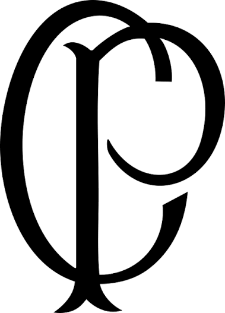
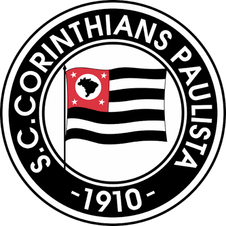
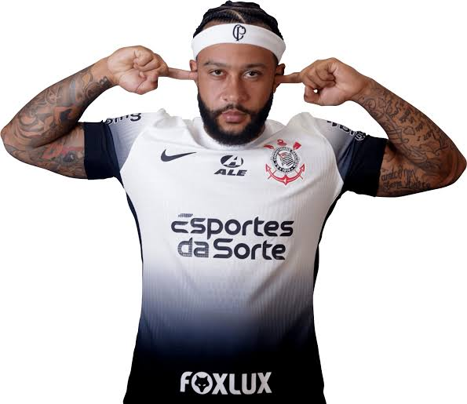
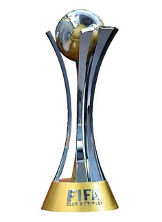

Eu vou te explicar o que é ser corinthiano de verdade!

O corinthiano
Por: Eduardo Chueire Moraes
O corinthiano não torce apenas. Ele sente o time como parte de si mesmo — quase como uma segunda família.
É acordar pensando no Timão, sofrer com cada derrota como se fosse pessoal, e vibrar com cada vitória como se o mundo tivesse parado só pra comemorar.
É carregar no peito o orgulho de pertencer à maior torcida do Brasil, aquela que enche estádios e nunca abandona o clube.
Curta se você é Corinthians de verdade!

Fiel até o fim
Por: Eduardo Chueire Moraes
Não importa se estamos na Série A, B ou C. O verdadeiro corinthiano não abandona o clube. Quanto mais difícil, mais forte fica a torcida.
É ver o estádio lotado mesmo quando o time não está vencendo. É cantar mais alto quando o placar está contra. Isso é ser Corinthians.
Porque ser corinthiano não é torcer por um time. É carregar uma história de luta e paixão.
Se identifica? Curta esse post!

Os jogadores
Por: Eduardo Chueire Moraes
Os jogadores que vestem a camisa do Corinthians carregam muito mais do que um uniforme. Eles carregam a história e a paixão da maior torcida do Brasil.
Quando um jogador entra em campo com o manto alvinegro, ele deixa de ser só um atleta. Ele se torna parte da nação corinthiana.
Ídolos nascem, lendas são feitas e cada gol ecoa no coração da Fiel.
Curta se você vibra com os jogadores do Timão!

Os títulos
Por: Eduardo Chueire Moraes
O Corinthians é um dos clubes mais vitoriosos do Brasil. Brasileiros, Paulistas, Copa do Brasil e o título mais glorioso: o Mundial de Clubes de 2012.
Em 2012, o Timão conquistou o mundo. Derrotou o Chelsea na final e se tornou Campeão Mundial. Uma conquista eternizada no coração da Fiel.
Cada título é uma página da nossa história. Cada taça levanta o nome do Corinthians ainda mais alto.